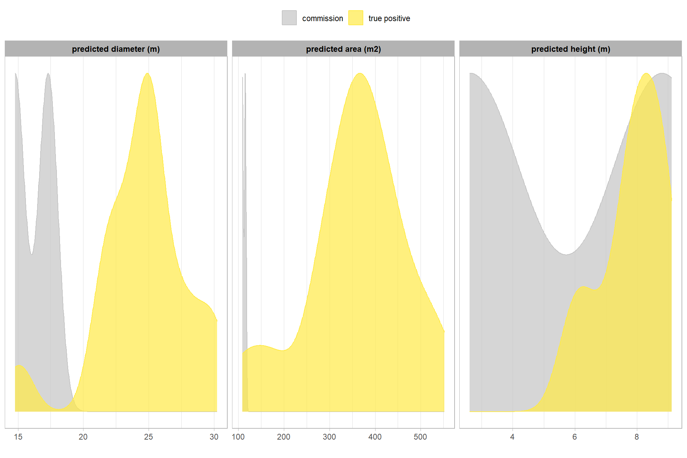
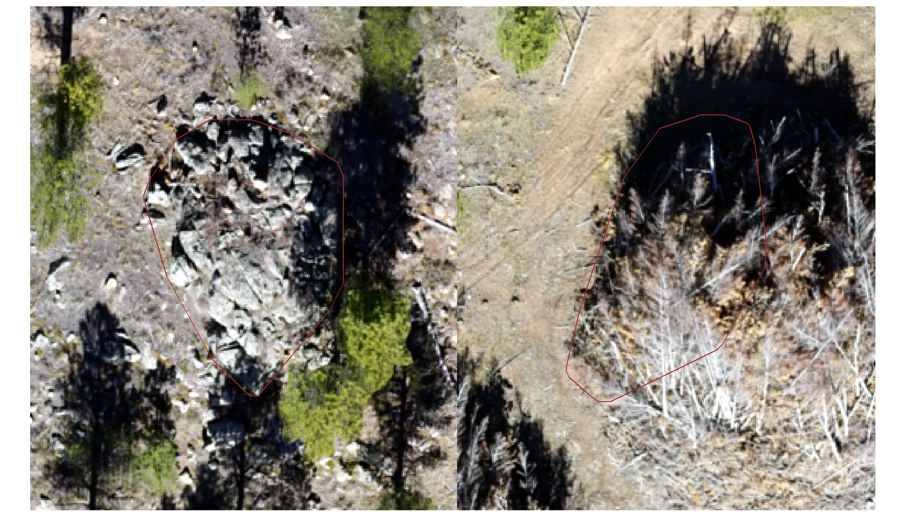
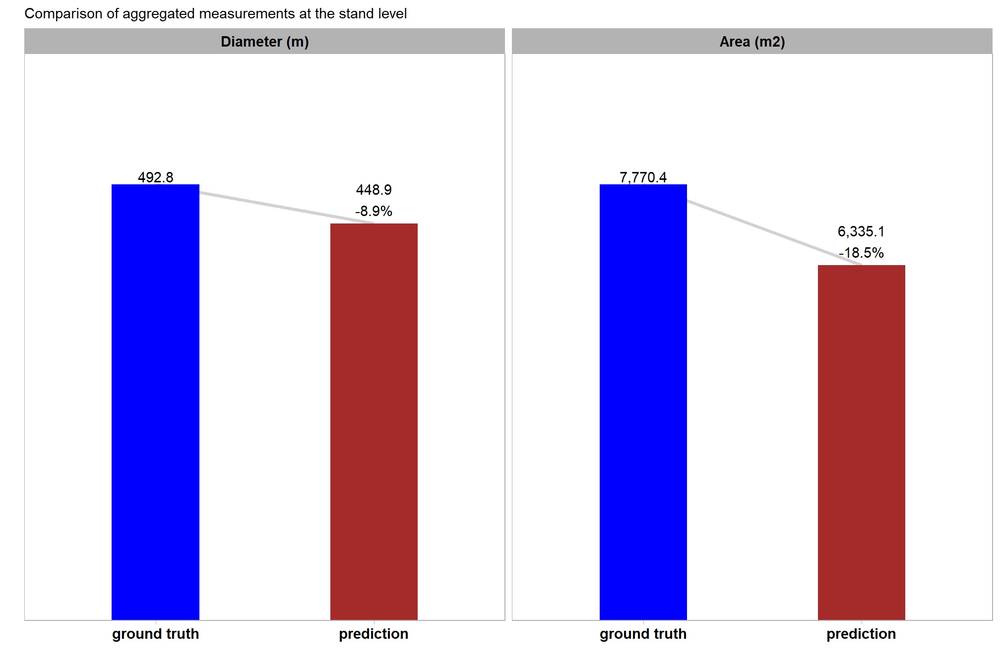

Section 12 Method Validation: ARNF Machine Piles
12.1 Site Introduction
Here, we’ll be working with another ponderosa pine evaluation site, this one on the Arapahoe-Roosevelt National Forest (ARNF) which serves as an important validation site for testing the influence of pile geometry and local ecology on detection. The ARNF site features massive machine piles that are notably more circular and geometrically regular than the highly irregular piles at the BHEF site. This high regularity differentiates it from the BHEF’s structural complexity, while the massive, mechanically built nature distinguishes it from the circular, but small hand piles at the Pinyon-Juniper site. The ARNF is in a drier climate than BHEF, and the treatment was more recent (one year prior), meaning less tree regeneration is expected. This unique combination of massive size, simple geometry, and low regeneration allows us to isolate the methodology’s performance against large, regularly-shaped targets and further validate the generalizability of the detection method across a wide spectrum of pile size, shape, and setting amongst different terrain and vegetation which has different spectral characteristics.
Given these favorable geometric and ecological conditions, parameter adjustments for the ARNF site will leverage the high minimum size filters (e.g., min_ht_m and min_area_m2) to focus on the expected large pile size, but will employ tighter geometric filters (e.g., circle_fit_iou_pct) than those used for the BHEF site to capitalize on the more regular, circular pile shapes. The reduced expected regeneration means the spectral filter may not need to be as strictly applied as at the BHEF site. As with the other validation sites, image-annotated pile footprints will be used as ground truth data to calculate performance metrics (e.g., F-score and MAPE) to determine how well the methodology performs under these specific conditions.
insert prescription detail
12.2 Data Processing
12.2.1 Process Raw Point Cloud
We’ll use cloud2trees::cloud2raster() to process the raw point cloud data
las_dir_temp <- "F:/UAS_Collections/ARNF_DiamondView_202510/point_cloud_high_density" # where is the raw las
c2t_output_dir <- "../data/ARNF_DiamondView_202510/" # where do you want to save processed data to?
if(!dir.exists(c2t_output_dir)){dir.create(c2t_output_dir, showWarnings = F)}
# output dir
dir_temp <- file.path(c2t_output_dir, "point_cloud_processing_delivery")
# check out the point cloud data really quick
# list.files(normalizePath(las_dir_temp), pattern = ".*\\.(laz|las)$", full.names = TRUE, recursive = T)
# read header with catalog
lidR::readLAScatalog(las_dir_temp)## class : LAScatalog (v1.2 format 3)
## extent : 455073.8, 456582.3, 4535127, 4536067 (xmin, xmax, ymin, ymax)
## coord. ref. : WGS 84 / UTM zone 13N
## area : 1.24 km²
## points : 1.37 billion points
## type : airborne
## density : 1102.8 points/m²
## density : 39.9 pulses/m²
## num. files : 44# do it
if(!dir.exists(dir_temp)){
# ctg_temp <- lidR::readLAScatalog(las_flist_temp)
# ctg_temp@data %>% dplyr::glimpse()
# remove(ctg_temp)
# gc()
# cloud2trees
cloud2raster_ans <- cloud2trees::cloud2raster(
output_dir = c2t_output_dir
, input_las_dir = las_dir_temp
, accuracy_level = 2
, keep_intrmdt = F
, dtm_res_m = 0.2
, chm_res_m = 0.1
, min_height = 0 # effectively generates a DSM based on non-ground points
)
# cloud2raster_ans$chm_rast
# pc_ext_temp <- sf::st_read(file.path(c2t_output_dir,"point_cloud_processing_delivery","raw_las_ctg_info.gpkg"))
}else{
dtm_temp <- terra::rast( file.path(dir_temp, "dtm_0.2m.tif") )
chm_temp <- terra::rast( file.path(dir_temp, paste0("chm_", 0.1,"m.tif")) )
cloud2raster_ans <- list(
"dtm_rast" = dtm_temp
, "chm_rast" = chm_temp
)
}
# huh?
cloud2raster_ans## $dtm_rast
## class : SpatRaster
## size : 4704, 7544, 1 (nrow, ncol, nlyr)
## resolution : 0.2, 0.2 (x, y)
## extent : 455073.6, 456582.4, 4535127, 4536068 (xmin, xmax, ymin, ymax)
## coord. ref. : WGS 84 / UTM zone 13N (EPSG:32613)
## source : dtm_0.2m.tif
## name : 1_dtm_0.2m
## min value : 2385.600
## max value : 2501.163
##
## $chm_rast
## class : SpatRaster
## size : 9406, 15085, 1 (nrow, ncol, nlyr)
## resolution : 0.1, 0.1 (x, y)
## extent : 455073.8, 456582.3, 4535127, 4536067 (xmin, xmax, ymin, ymax)
## coord. ref. : WGS 84 / UTM zone 13N (EPSG:32613)
## source : chm_0.1m.tif
## name : focal_mean
## min value : 0.000
## max value : 27.89912.2.2 Vector Data
cloud2trees::cloud2raster() wrote out a file with the spatial coverage of the point cloud data, let’s read that in.
# pc extent
pc_ext_temp <- sf::st_read(file.path(c2t_output_dir,"point_cloud_processing_delivery","raw_las_ctg_info.gpkg"), quiet=T) %>%
sf::st_union() %>%
# inward buffer to remove edge effects
sf::st_buffer(-10)
# mapview::mapview(pc_ext_temp)what is the area of the point cloud extent we are looking over?
sf::st_area(pc_ext_temp) %>%
as.numeric() %>%
`/`(10000) %>%
scales::comma(suffix = " ha", accuracy = 0.01)## [1] "97.15 ha"read in the treatment unit boundaries
###############################################################
# read unit boundary
###############################################################
arnf_stand_boundary <- sf::st_read("../data/ARNF_DiamondView_202510/Diamond_View_Boundary.gpkg", quiet=T) %>%
dplyr::rename_with(tolower) %>%
dplyr::rename_with(stringr::str_squish) %>%
dplyr::rename_with(make.names) %>%
dplyr::rename_with(~stringr::str_replace_all(.x, "\\.{2,}", ".")) %>%
dplyr::rename_with(~stringr::str_remove(.x, "\\.$")) %>%
dplyr::rename_with(~stringr::str_replace_all(.x, "\\.", "_")) %>%
sf::st_transform(terra::crs(cloud2raster_ans$chm_rast)) %>%
sf::st_union() # we have a single unit boundarywhat is the area of the treatment unit boundaries we are looking over?
arnf_stand_boundary %>%
sf::st_union() %>%
sf::st_area() %>%
as.numeric() %>%
`/`(10000) %>%
scales::comma(suffix = " ha", accuracy = 0.1)## [1] "73.6 ha"that’s great
The perimeter of each pile was digitized in a Geographic Information System (GIS) overlaid on a 0.04 m RGB orthomosaic. In this digitization process, the perimeter was based on the main footprint of the pile at ground level, excluding isolated logs or debris extending beyond the primary boundary. These ground truth polygons will be compared to the predicted pile boundaries using the intersection over union (IoU) metric, with a minimum threshold required for a true positive match.
load in the pile boundary polygons.
# read in polys
arnf_slash_piles_polys <-
sf::st_read("../data/ARNF_DiamondView_202510/arnf_diamond_view_pile_polys.shp", quiet=T) %>%
# sf::st_as_sf() %>%
dplyr::rename_with(tolower) %>%
dplyr::mutate(
pile_id = dplyr::row_number()
, treeID = dplyr::row_number()
) %>%
cloud2trees::simplify_multipolygon_crowns() %>%
dplyr::select(-c(treeID)) %>%
sf::st_make_valid() %>%
dplyr::filter(sf::st_is_valid(.)) %>%
# calculate area and volume
dplyr::mutate(
image_gt_area_m2 = sf::st_area(.) %>% as.numeric()
) %>%
# area
st_calculate_diameter() %>%
dplyr::rename(
image_gt_diameter_m = diameter_m
) %>%
sf::st_transform(terra::crs(cloud2raster_ans$chm_rast))
# add a flag for if a pile is in the stand or not based on a spatial intersection
arnf_slash_piles_polys <- arnf_slash_piles_polys %>%
dplyr::left_join(
arnf_slash_piles_polys %>%
sf::st_intersection(
arnf_stand_boundary %>%
sf::st_union() %>%
sf::st_transform(sf::st_crs(arnf_slash_piles_polys))
) %>%
sf::st_drop_geometry() %>%
dplyr::distinct(pile_id) %>%
dplyr::mutate(is_in_stand=T)
, by = "pile_id"
) %>%
dplyr::mutate(is_in_stand=dplyr::coalesce(is_in_stand, F))huh?
## Rows: 19
## Columns: 7
## $ shape_leng <dbl> 76.34086, 84.32555, 104.68118, 94.75513, 81.94145,…
## $ shape_area <dbl> 293.7914, 371.0813, 593.1854, 494.0396, 341.3929, …
## $ pile_id <int> 1, 2, 3, 4, 5, 6, 7, 8, 9, 10, 11, 12, 13, 14, 15,…
## $ image_gt_area_m2 <dbl> 293.5056, 370.7583, 593.0898, 493.8871, 341.3122, …
## $ geometry <POLYGON [m]> POLYGON ((455382.7 4535558,..., POLYGON ((…
## $ image_gt_diameter_m <dbl> 22.56549, 24.13478, 31.83121, 29.52870, 24.25567, …
## $ is_in_stand <lgl> TRUE, TRUE, TRUE, TRUE, TRUE, TRUE, TRUE, TRUE, TR…12.2.3 RGB Data
The RGB data is in a single file, so all we need to do is load it and resample
## function to change the resolution of RGB
change_res_fn <- function(
r
, my_res=1
, m = "bilinear"
# , ofile = tempfile(fileext = ".tif")
, ofile = NULL
){
r2 <- r
terra::res(r2) <- my_res
if(!inherits(ofile,"character")){
r2 <- terra::resample(r, r2, method = m)
}else{
r2 <- terra::resample(r, r2, method = m, filename=ofile, overwrite = T)
}
return(r2)
}
###############################################################
# read/crop RGB raster
###############################################################
rgb_fnm_temp <- "../data/ARNF_DiamondView_202510/arnf_diamond_view_rgb_0.08m.tif"
if(!file.exists(rgb_fnm_temp)){
# terra handles large files on disk automatically
rgb_rast_temp <- terra::rast("f:/UAS_Collections/ARNF_DiamondView_202510/DiamondPeak_Switchblade_transparent_mosaic_group1.tif")
# Read the polygon file (e.g., a shapefile)
polygon_border_temp <- arnf_stand_boundary %>%
sf::st_buffer(50) %>%
sf::st_bbox() %>%
sf::st_as_sfc() %>%
sf::st_as_sf() %>%
terra::vect() %>%
terra::project(terra::crs(rgb_rast_temp))
# Crop the raster to the rectangular extent of the polygon
# Specify a filename to ensure the result is written to disk
crop_rgb_rast_temp <- terra::crop(rgb_rast_temp, polygon_border_temp, filename = tempfile(fileext = ".tif"), overwrite = TRUE)
# Mask the cropped raster to the precise shape of the polygon
# This function will also be processed on disk due to the file size
arnf_rgb_rast <- terra::mask(crop_rgb_rast_temp, polygon_border_temp, filename = tempfile(fileext = ".tif"), overwrite = TRUE)
## apply the change_res_fn function
arnf_rgb_rast <- change_res_fn(arnf_rgb_rast, my_res=0.08, ofile = rgb_fnm_temp)
}else{
arnf_rgb_rast <- terra::rast(rgb_fnm_temp)
}
terra::res(arnf_rgb_rast)## [1] 0.08 0.08Given the expected massive size of these piles, we utilize a slightly coarser CHM resolution, aggregating the raster to 0.15m. This is sufficient detail for identification and quantification of large objects, and previous analysis of the training data indicated that this 0.15m resolution provided similarly high detection and form quantification accuracies as the finer 0.1m CHM.
we’ll borrow from the cloud2trees codebase to get a function to change the resolution of a raster exactly
###############################################################
# crop/mask CHM raster
###############################################################
chm_fnm_temp <- "../data/ARNF_DiamondView_202510/arnf_chm_small.tif"
if(!file.exists(chm_fnm_temp)){
# Crop the raster to the rectangular extent of the polygon
# Specify a filename to ensure the result is written to disk
crop_chm_rast_temp <- cloud2raster_ans$chm_rast %>%
terra::crop(
arnf_stand_boundary %>%
sf::st_union() %>%
sf::st_buffer(10) %>%
terra::vect() %>%
terra::project(terra::crs(cloud2raster_ans$chm_rast))
, filename = tempfile(fileext = ".tif")
, overwrite = TRUE
)
# Mask the cropped raster to the precise shape of the polygon
# This function will also be processed on disk due to the file size
chm_rast_stand <- terra::mask(
crop_chm_rast_temp
, arnf_stand_boundary %>%
sf::st_union() %>%
sf::st_buffer(10) %>%
terra::vect() %>%
terra::project(terra::crs(cloud2raster_ans$chm_rast))
, filename = tempfile(fileext = ".tif")
, overwrite = TRUE
)
# aggregate
chm_rast_stand <- adjust_raster_resolution(chm_rast_stand, target_resolution = 0.15, ofile = chm_fnm_temp)
}else{
chm_rast_stand <- terra::rast(chm_fnm_temp)
}now that we have all the data, let’s plot the RGB + CHM really quick
terra::plotRGB(arnf_rgb_rast, stretch="lin", axes=F)
terra::plot(chm_rast_stand, col = viridis::plasma(n=55,alpha = 0.3), add = T, axes=F, legend=F)
and let’s map it
# option to put satellite imagery as base layer of mapview maps
mapview::mapviewOptions(
homebutton = FALSE
# , basemaps = c("Esri.WorldImagery","OpenStreetMap")
, basemaps = c("Esri.WorldImagery","OpenStreetMap")
)
# map it
mapview::mapview(
arnf_stand_boundary %>%
sf::st_union()
, color = "black"
, lwd = 1
, alpha.regions = 0
, label = FALSE
, legend = FALSE
, popup = FALSE
, layer.name = "stand boundary"
) +
# mapview::mapview(arnf_slash_piles_points, zcol = "height_m")
mapview::mapview(arnf_slash_piles_polys, zcol = "image_gt_area_m2",layer.name="machine piles")12.3 Pile Detection: Data Fusion
since we have both structural and spectral data, we’ll start by using the data fusion approach and do a full walk-through of our detection results after which we’ll circle back to explore results obtained using structural data only.
12.3.1 Structural Candidate Segments
we’ll start by detecting candidate slash piles based on the structural CHM data alone with our slash_pile_detect_watershed() function we defined in this earlier section.
the treatment prescription for the unit of interest called for…
insert prescription description
To apply the detection methodology to the massive machine pile site, we first set the four primary structural parameters (min_ht_m, max_ht_m, min_area_m2, and max_area_m2) based on expectations derived from the specific treatment prescription and its implementation on the ground. These parameters, along with the two shape filters, are used to define the expected pile geometric form.
Onsite observations indicated that these piles are uniformly massive, leading us to rely on strict size and scale filters to exclude smaller non-pile objects like shrubs and boulders. To establish these thresholds, we utilized familiar objects as anchors for contextualizing scale: a standard US parking spot is approximately 16.7 square meters, with maneuvering space increasing the footprint up to 26.7 square meters. We also took photos of a work truck (a lifted Dodge Ram 2500 Mega Cab turbo diesel) from the ground parked next to the pile to aid us in estimating pile height and area. Google’s AI search mode tells us that a lifted Dodge Ram 2500 Mega Cab turbo diesel typically has an overall height of approximately 2.4 m (8 feet) and the pile we parked next to was at least twice that height. We’ll set our expected height thresholds based on these estimates.
The geometric filters are critical for distinguishing man-made piles from naturally irregular canopy clumps, especially given the observed variability in pile perimeter (from circular to rectangular). Because we do expect these ARNF machine piles to be roughly circular in shape, we’ll set the circle_fit_iou_pct and convexity_pct parameter near the recommended settings based on our ponderosa pine training data site and the optimal parameter settings analysis
The specific structural and geometric settings used are:
- Height and Area Filters (Scale-based):
max_ht_m= 9.12 (3.8 times the height of our lifted Dodge Ram 2500 Mega Cab turbo diesel)min_ht_m= 2.16 (90% the height of our lifted Dodge Ram 2500 Mega Cab turbo diesel)min_area_m2= 67.5 (2.5 large parking spaces)max_area_m2= 594 (22 large parking spaces)
- Geometric Filters (Shape-based):
circle_fit_iou_pct= set to 0.21, which is approximately 25 percentage points lower than the optimal value (0.44-0.48) identified using the training data to reflect the loss in precision when using machines to create large piles versus manually hand piling materialconvexity_pct= set to 0.08 which is in the the optimal range identified in the Ponderosa Pine training data.
As noted above, we will also use a slightly coarser CHM resolution than we used for the training data and Pinyon-Juniper validation site. Given the expected massive size of these piles, we utilize a slightly coarser CHM resolution, aggregating the raster to 0.15m. This is sufficient detail for identification and quantification of large objects, and our previous analysis of the training data indicated that this 0.15m resolution provided similarly high detection and form quantification accuracies as the finer 0.1m CHM.
Finally, given the expected reduction in tree regeneration due to the more recent treatment date, the risk of misclassifying clumped small trees is lower than at the BHEF site. Therefore, we will rely on spectral filtering to help discriminate between genuine large piles and aggregated vegetation, setting the spectral_weight parameter to a less restrictive value of ‘4’ (which applies four of the five spectral thresholds) based on the training site’s recommended value and the reduced expectation of high false positive rates from dense tree regeneration.
slash_pile_detect_watershed() that CHM
outdir_temp <- "../data/ARNF_DiamondView_202510/"
fnm_temp <- file.path(outdir_temp,"arnf_structural_candidate_segments.gpkg")
if(!file.exists(fnm_temp)){
set.seed(11)
slash_pile_detect_watershed_ans <- slash_pile_detect_watershed(
chm_rast = chm_rast_stand
#### height and area thresholds for the detected piles
# these should be based on data from the literature or expectations based on the prescription
, max_ht_m = (2.4*3.8) # set the max expected pile height
, min_ht_m = (2.4*0.9) # set the min expected pile height
, min_area_m2 = (27*2.5) # set the min expected pile area
, max_area_m2 = (27*22) # set the max expected pile area
#### irregularity filtering
# 1 = perfectly convex (no inward angles); 0 = so many inward angles
# values closer to 1 remove more irregular segments;
# values closer to 0 keep more irregular segments (and also regular segments)
# these will all be further filtered for their circularity and later smoothed to remove blocky edges
# and most inward angles by applying a convex hull to the original detected segment
, convexity_pct = 0.08 # min required overlap between the predicted pile and the convex hull of the predicted pile
#### circularity filtering
# 1 = perfectly circular; 0 = not circular (e.g. linear) but also circular
# min required IoU between the predicted pile and the best fit circle of the predicted pile
, circle_fit_iou_pct = 0.21
#### shape refinement & overlap removal
## smooth_segs = T ... convex hulls of raster detected segments are returned, any that overlap are removed
## smooth_segs = F ... raster detected segments are returned (blocky) if they meet all prior rules
, smooth_segs = T
)
# save
slash_pile_detect_watershed_ans %>% sf::st_write(fnm_temp, append = F)
}else{
slash_pile_detect_watershed_ans <- sf::st_read(fnm_temp, quiet=T)
}
# what did we get?
slash_pile_detect_watershed_ans %>% dplyr::glimpse()## Rows: 22
## Columns: 8
## $ pred_id <int> 1, 2, 3, 4, 5, 6, 7, 8, 9, 10, 11, 12, 13, 14, 15, 16,…
## $ area_m2 <dbl> 413.2013, 552.1725, 470.6887, 350.4488, 369.3375, 430.…
## $ volume_m3 <dbl> 1477.3873, 2308.8399, 1605.4099, 1483.9100, 883.8572, …
## $ max_height_m <dbl> 8.417358, 9.116704, 7.826457, 8.310950, 6.352087, 9.11…
## $ volume_per_area <dbl> 3.575467, 4.181374, 3.410768, 4.234314, 2.393088, 4.12…
## $ pct_chull <dbl> 0.7988783, 0.7817122, 0.9076699, 0.7363488, 0.7859275,…
## $ diameter_m <dbl> 27.85480, 29.51038, 27.37243, 25.58281, 24.30787, 25.3…
## $ geom <POLYGON [m]> POLYGON ((455598.7 4535228,..., POLYGON ((4556…12.3.2 Accuracy of these structural settings
let’s quickly look at the accuracy of the pile detection if we were to only use the structural data to identify piles with these specific settings.
note, that if we only had structural data, we would be much more restrictive in setting the pile detection parameters as we’ll demonstrate below.
we aren’t going to fully discuss this accuracy assessment, it is presented only for the curious
# add filter for those in stand
# pred
struct_temp <- slash_pile_detect_watershed_ans %>%
dplyr::left_join(
slash_pile_detect_watershed_ans %>%
sf::st_intersection(
arnf_stand_boundary %>%
sf::st_union() %>%
sf::st_transform(sf::st_crs(slash_pile_detect_watershed_ans))
) %>%
sf::st_drop_geometry() %>%
dplyr::distinct(pred_id) %>%
dplyr::mutate(is_in_stand=T)
, by = "pred_id"
) %>%
dplyr::mutate(is_in_stand=dplyr::coalesce(is_in_stand, F))
# ground truth and prediction matching process
gt_pred_match_temp <- ground_truth_prediction_match(
ground_truth =
arnf_slash_piles_polys %>%
dplyr::filter(is_in_stand) %>%
dplyr::arrange(desc(image_gt_diameter_m)) %>%
sf::st_transform(sf::st_crs(struct_temp))
, gt_id = "pile_id"
, predictions = struct_temp %>% dplyr::filter(is_in_stand)
, pred_id = "pred_id"
, min_iou_pct = 0.05
)
# add data from gt and pred piles
gt_pred_match_temp <-
gt_pred_match_temp %>%
# add area of gt
dplyr::left_join(
arnf_slash_piles_polys %>%
sf::st_drop_geometry() %>%
dplyr::filter(is_in_stand) %>%
dplyr::select(
pile_id
, image_gt_area_m2
, image_gt_diameter_m
) %>%
dplyr::rename(
gt_diameter_m = image_gt_diameter_m
, gt_area_m2 = image_gt_area_m2
) %>%
dplyr::mutate(pile_id=as.numeric(pile_id))
, by = "pile_id"
) %>%
# add info from predictions
dplyr::left_join(
struct_temp %>%
sf::st_drop_geometry() %>%
dplyr::select(
pred_id
, area_m2, volume_m3, max_height_m, diameter_m
) %>%
dplyr::rename(
pred_area_m2 = area_m2, pred_volume_m3 = volume_m3
, pred_height_m = max_height_m, pred_diameter_m = diameter_m
)
, by = dplyr::join_by(pred_id)
) %>%
dplyr::mutate(
### calculate these based on the formulas below...agg_ground_truth_match() depends on those formulas
diff_image_diameter_m = pred_diameter_m-gt_diameter_m
, pct_diff_image_diameter_m = (gt_diameter_m-pred_diameter_m)/gt_diameter_m
# area diffs
, diff_area_m2 = pred_area_m2-gt_area_m2
, pct_diff_area_m2 = (gt_area_m2-pred_area_m2)/gt_area_m2
)
# huh?
agg_ground_truth_match(ground_truth_prediction_match_ans = gt_pred_match_temp) %>%
kbl_agg_gt_match(caption = "pile detection and form quantification accuracy metrics<br>structural only prior to data fusion")| . | value | |
|---|---|---|
| Detection Count | TP | 17 |
| FN | 2 | |
| FP | 4 | |
| Detection | F-score | 85% |
| Recall | 89% | |
| Precision | 81% | |
| Area m2 | ME | -56.50 |
| RMSE | 84.3 | |
| MAPE | 15% | |
| Diameter m (image) | ME | -1.72 |
| RMSE | 2.4 | |
| MAPE | 7% |
12.3.3 Spectral Filtering of Candidate Segments
Now we’ll filter the structurally-detected candidate slash piles using the RGB spectral data with the polygon_spectral_filtering() function we defined in this earlier section
The spectral filtering approach is a data fusion method used to filter candidate slash pile detections first identified using structural data alone. After initial candidates are identified based on structural data, this method applies a set of five spectral index thresholds to the candidate segments. The spectral_weight parameter is an integer from 1 to 5 that directly controls the number of thresholds that are applied. For example, a value of “3” means a candidate pile must pass at least three of the five thresholds to be retained. This process helps to filter out objects like shrubs, lower tree branches, or boulders that may have been structurally misidentified as piles.
Given that the BHEF ponderosa pine validation site has a high likelihood of structural false positives from clumps of small tree regeneration, we set this parameter to its highest level (‘5’) to require all available spectral criteria to be met for retention in a attempt to maximize the removal of vegetation candidate segments.
f_temp <- "../data/ARNF_DiamondView_202510/final_predicted_slash_piles.gpkg"
if(!file.exists(f_temp)){
final_predicted_slash_piles <- polygon_spectral_filtering(
sf_data = slash_pile_detect_watershed_ans
, rgb_rast = arnf_rgb_rast
# define the band index
, red_band_idx = 1
, green_band_idx = 2
, blue_band_idx = 3
# spectral weighting
, spectral_weight = 4
)
final_predicted_slash_piles %>% sf::st_write(f_temp,append = F, quiet = T)
}else{
final_predicted_slash_piles <- sf::st_read(f_temp,quiet=T)
}what did we get?
## Rows: 19
## Columns: 23
## $ pred_id <int> 1, 2, 3, 4, 5, 6, 7, 8, 12, 13, 14, 15, 16, 17, 18, 1…
## $ area_m2 <dbl> 413.2013, 552.1725, 470.6887, 350.4488, 369.3375, 430…
## $ volume_m3 <dbl> 1477.3873, 2308.8399, 1605.4099, 1483.9100, 883.8572,…
## $ max_height_m <dbl> 8.417358, 9.116704, 7.826457, 8.310950, 6.352087, 9.1…
## $ volume_per_area <dbl> 3.575467, 4.181374, 3.410768, 4.234314, 2.393088, 4.1…
## $ pct_chull <dbl> 0.7988783, 0.7817122, 0.9076699, 0.7363488, 0.7859275…
## $ diameter_m <dbl> 27.85480, 29.51038, 27.37243, 25.58281, 24.30787, 25.…
## $ rast_agg_grvi <dbl> 0.009463723, -0.005617978, -0.004115226, -0.008968610…
## $ rast_agg_rgri <dbl> 0.9812500, 1.0112995, 1.0082644, 1.0180995, 1.0875000…
## $ rast_agg_vdvi <dbl> -0.002288329, -0.003412969, -0.002493766, -0.00273972…
## $ rast_agg_rgbvi <dbl> -0.002581326, -0.005107823, -0.002967236, -0.00302114…
## $ rast_agg_exg <dbl> -3.048748e-03, -4.545420e-03, -3.322244e-03, -3.64965…
## $ rast_agg_exr <dbl> 0.1243986, 0.1382114, 0.1369565, 0.1413386, 0.1732456…
## $ rast_agg_exgr <dbl> -0.1352518, -0.1479126, -0.1468560, -0.1522613, -0.18…
## $ rast_agg_bi <dbl> 0.3885423, 0.4733860, 0.4782020, 0.4554864, 0.4665147…
## $ rast_agg_sat <dbl> 0.12195122, 0.07843138, 0.09677419, 0.11764706, 0.193…
## $ inrange_th_exgr <dbl> 1, 1, 1, 1, 1, 1, 1, 1, 1, 1, 1, 1, 1, 1, 1, 1, 1, 1,…
## $ inrange_th_rgri <dbl> 1, 1, 1, 1, 1, 1, 1, 1, 1, 1, 1, 1, 1, 1, 1, 1, 1, 1,…
## $ inrange_th_vdvi <dbl> 1, 1, 1, 1, 1, 1, 1, 1, 1, 1, 1, 1, 1, 1, 1, 1, 1, 1,…
## $ inrange_th_bi <dbl> 1, 1, 1, 1, 1, 1, 1, 1, 1, 1, 1, 1, 1, 1, 1, 1, 1, 1,…
## $ inrange_th_sat <dbl> 1, 1, 1, 1, 1, 1, 1, 1, 1, 1, 1, 1, 1, 1, 1, 1, 1, 1,…
## $ inrange_th_votes <dbl> 5, 5, 5, 5, 5, 5, 5, 5, 5, 5, 5, 5, 5, 5, 5, 5, 5, 5,…
## $ geom <POLYGON [m]> POLYGON ((455598.7 4535228,..., POLYGON ((455…how many piles were removed?
# how many piles were removed?
nrow(slash_pile_detect_watershed_ans)-nrow(final_predicted_slash_piles)## [1] 3# what proportion were removed?
scales::percent(
(nrow(slash_pile_detect_watershed_ans)-nrow(final_predicted_slash_piles))/nrow(slash_pile_detect_watershed_ans)
, accuracy=0.1
)## [1] "13.6%"12.3.4 Detection and Quantification Accuracy
let’s see how we did given the list of predictions compared to the ground truth data using the confusion matrix matching process we outlined in this earlier section.
we’ll filter both ground truth and predicted piles to keep only those that actually intersect with the study unit boundary for comparison
# add filter
# pred
final_predicted_slash_piles <- final_predicted_slash_piles %>%
dplyr::left_join(
final_predicted_slash_piles %>%
sf::st_intersection(
arnf_stand_boundary %>%
sf::st_union() %>%
sf::st_transform(sf::st_crs(final_predicted_slash_piles))
) %>%
sf::st_drop_geometry() %>%
dplyr::distinct(pred_id) %>%
dplyr::mutate(is_in_stand=T)
, by = "pred_id"
) %>%
dplyr::mutate(is_in_stand=dplyr::coalesce(is_in_stand, F))12.3.4.1 Instance matching
now apply the instance matching process we outlined in this earlier section to establish True Positives (TP), False Positives (FP, commissions), and False Negatives (FN, omissions)
# ground truth and prediction matching process
ground_truth_prediction_match_ans <- ground_truth_prediction_match(
ground_truth =
arnf_slash_piles_polys %>%
dplyr::filter(is_in_stand) %>%
dplyr::arrange(desc(image_gt_diameter_m)) %>%
sf::st_transform(sf::st_crs(final_predicted_slash_piles))
, gt_id = "pile_id"
, predictions = final_predicted_slash_piles %>% dplyr::filter(is_in_stand)
, pred_id = "pred_id"
, min_iou_pct = 0.05
)
# add data from gt and pred piles
ground_truth_prediction_match_ans <-
ground_truth_prediction_match_ans %>%
# add area of gt
dplyr::left_join(
arnf_slash_piles_polys %>%
sf::st_drop_geometry() %>%
dplyr::filter(is_in_stand) %>%
dplyr::select(
pile_id
, image_gt_area_m2
, image_gt_diameter_m
) %>%
dplyr::rename(
gt_diameter_m = image_gt_diameter_m
, gt_area_m2 = image_gt_area_m2
) %>%
dplyr::mutate(pile_id=as.numeric(pile_id))
, by = "pile_id"
) %>%
# add info from predictions
dplyr::left_join(
slash_pile_detect_watershed_ans %>%
sf::st_drop_geometry() %>%
dplyr::select(
pred_id
, area_m2, volume_m3, max_height_m, diameter_m
) %>%
dplyr::rename(
pred_area_m2 = area_m2, pred_volume_m3 = volume_m3
, pred_height_m = max_height_m, pred_diameter_m = diameter_m
)
, by = dplyr::join_by(pred_id)
) %>%
dplyr::mutate(
### calculate these based on the formulas below...agg_ground_truth_match() depends on those formulas
# image diameter
diff_image_diameter_m = pred_diameter_m-gt_diameter_m
, pct_diff_image_diameter_m = (gt_diameter_m-pred_diameter_m)/gt_diameter_m
# area diffs
, diff_area_m2 = pred_area_m2-gt_area_m2
, pct_diff_area_m2 = (gt_area_m2-pred_area_m2)/gt_area_m2
)
# huh?
ground_truth_prediction_match_ans %>% dplyr::glimpse()## Rows: 21
## Columns: 16
## $ pile_id <dbl> 7, 3, 8, 4, 6, 9, 15, 18, 13, 10, 11, 19, 5,…
## $ i_area <dbl> 395.2768, 498.7346, 532.4088, 374.2285, 448.…
## $ u_area <dbl> 575.5674, 600.8527, 572.9455, 503.9698, 482.…
## $ iou <dbl> 0.6867602, 0.8300447, 0.9292486, 0.7425614, …
## $ pred_id <int> 1, 13, 2, 16, 3, 4, 6, 19, 20, 5, 17, 8, 18,…
## $ match_grp <ord> true positive, true positive, true positive,…
## $ gt_area_m2 <dbl> 557.6430, 593.0898, 553.1818, 493.8871, 460.…
## $ gt_diameter_m <dbl> 32.91111, 31.83121, 29.75881, 29.52870, 28.6…
## $ pred_area_m2 <dbl> 413.2013, 506.4975, 552.1725, 384.3112, 470.…
## $ pred_volume_m3 <dbl> 1477.3873, 2131.7240, 2308.8399, 1569.0321, …
## $ pred_height_m <dbl> 8.417358, 8.782186, 9.116704, 8.221604, 7.82…
## $ pred_diameter_m <dbl> 27.85480, 30.22900, 29.51038, 24.54231, 27.3…
## $ diff_image_diameter_m <dbl> -5.056309222, -1.602212264, -0.248426498, -4…
## $ pct_diff_image_diameter_m <dbl> 0.1536353231, 0.0503346276, 0.0083479995, 0.…
## $ diff_area_m2 <dbl> -144.441766, -86.592288, -1.009317, -109.575…
## $ pct_diff_area_m2 <dbl> 0.259021922, 0.146001987, 0.001824566, 0.221…that’s a lot of great detail at the individual pile instance level for us to dig into. before we do that, let’s aggregate the instances to see how we did at the stand level overall
12.3.4.2 Overall (stand level)
Now we’ll aggregate the instance matching results to calculate overall performance assessment metrics. Here, we take the counts of True Positives (TP), False Positives (FP, commissions), and False Negatives (FN, omissions), to determine overall accuracy. This aggregation will give us two types of results:
detection accuracy metrics: such as Recall, Precision, and F-score, are calculated directly by aggregating these raw TP, FP, and FN counts and quantifies the method’s ability to find the piles
quantification accuracy metrics: such as RMSE, MAPE, and Mean Error of pile form measurements (e.g. height, diameter) are calculated by aggregating the differences between the estimated pile attributes and the ground truth values for instances classified as True Positives. These metrics tell us about the method’s ability to accurately quantify the form of the piles it successfully identified
agg_ground_truth_match_ans <- agg_ground_truth_match(ground_truth_prediction_match_ans = ground_truth_prediction_match_ans)let’s table the most relevant metrics
agg_ground_truth_match_ans %>%
kbl_agg_gt_match(
caption = "pile detection and form quantification accuracy metrics<br>data fusion ARNF ponderosa pine validation site"
)| . | value | |
|---|---|---|
| Detection Count | TP | 17 |
| FN | 2 | |
| FP | 2 | |
| Detection | F-score | 89% |
| Recall | 89% | |
| Precision | 89% | |
| Area m2 | ME | -56.50 |
| RMSE | 84.3 | |
| MAPE | 15% | |
| Diameter m (image) | ME | -1.72 |
| RMSE | 2.4 | |
| MAPE | 7% |
# save the table for full comparison at the very end
# save the table for full comparison at the very end
sf::st_read(dsn = all_agg_ground_truth_match_ans_fp, quiet = T) %>%
sf::st_set_geometry("geometry") %>%
dplyr::filter(
site != "ARNF ponderosa pine validation site"
) %>%
dplyr::bind_rows(
all_agg_ground_truth_sf_format(
stand_boundary = arnf_stand_boundary
, site = "ARNF ponderosa pine validation site"
) %>%
sf::st_set_geometry("geometry") %>%
dplyr::bind_cols(
agg_ground_truth_match_ans
# join on aggregated form quantifications that we have for all
, ground_truth_prediction_match_ans %>%
dplyr::ungroup() %>%
dplyr::rename(image_gt_diameter_m = gt_diameter_m) %>%
dplyr::summarise(
dplyr::across(
c(image_gt_diameter_m, pred_diameter_m, gt_area_m2, pred_area_m2, pred_volume_m3, pred_height_m)
, ~ sum(.x, na.rm = TRUE)
)
)
)
) %>%
# dplyr::glimpse()
# readr::write_csv(file = all_agg_ground_truth_match_ans_fp, append = F, progress = F)
sf::st_write(dsn = all_agg_ground_truth_match_ans_fp, append = F, quiet = T)The detection performance at the ARNF ponderosa pine validation site, using the data fusion approach, demonstrates strong generalizability of our method despite the novel pile structure and site conditions. With only 19 actual piles in the validation area, each False Positive (FP) or False Negative (FN) prediction exerted a significant influence on the overall accuracy metrics. The 89.5% recall rate means the method successfully identified approximately 9 out of every 10 actual piles, indicating the structural and spectral filters were effective at retaining most true piles. A strong precision rate of 89.5% confirms the methodology did well at excluding spurious False Positive predictions, successfully distinguishing genuine piles from non-pile objects like dense small tree clumps and rock outcroppings. The combined accuracy, quantified by an F-score of 89.5%, is a desirable result that further indicates the methodology is transferable across varied treatments, prescriptions, and pile constructions over highly varied landscapes.
let’s look at our predictions compared to the actual piles overlaid on the RGB with the ground truth piles as the filled shapes (omissions in blue and true positive matches in yellow) and the predicted piles outlined in yellow (true positive) or white (false positive)
pal_match_grp <- c(
"omission"=viridis::cividis(3)[1]
, "commission"= "white" #viridis::cividis(3)[2]
, "true positive"=viridis::cividis(3)[3]
)
# we have to save the data to plot it with terra
terra_gt_piles_temp <- arnf_slash_piles_polys %>%
dplyr::filter(is_in_stand) %>%
dplyr::inner_join(
ground_truth_prediction_match_ans %>%
# dplyr::filter(match_grp = "omission") %>%
dplyr::select(pile_id,match_grp)
, by = "pile_id"
) %>%
sf::st_transform(terra::crs(arnf_rgb_rast)) %>%
terra::vect()
terra_pred_piles_temp <- final_predicted_slash_piles %>%
dplyr::filter(is_in_stand) %>%
dplyr::left_join(
ground_truth_prediction_match_ans %>%
dplyr::select(pred_id,match_grp)
, by = "pred_id"
) %>%
sf::st_transform(terra::crs(arnf_rgb_rast)) %>%
terra::vect()
#####################################
# terra plot is much faster
#####################################
terra::plotRGB(arnf_rgb_rast, stretch="lin", axes=F, colNA="white")
terra::plot(
arnf_stand_boundary %>%
sf::st_transform(terra::crs(arnf_rgb_rast)) %>%
terra::vect()
, border = "black"
, col = NA
, lwd = 1.6
, add = T
, axes=F, legend=F
)
terra::plot(
terra_gt_piles_temp
, border = NA
, col = pal_match_grp[terra_gt_piles_temp$match_grp]
, add = T, axes=F, legend=F
, alpha = 0.6
)
terra::plot(
terra_pred_piles_temp
, border = pal_match_grp[terra_pred_piles_temp$match_grp]
, col = NA
, lwd = 2.2
, add = T, axes=F, legend=F
)
Visual inspection reveals that one false positive prediction is within the footprint of an actual pile but the predictions were split over two segments, suggesting that the pile had more than one distinct “peak” which resulted in the watershed method splitting this one true pile. The other false positive prediction appears to be a pile of rocks that was not removed as it should have been by the spectral threshold filtering. This indicates that this particular rock grouping has a spectral signature similar to our expectations for slash piles, or that the spectral filtering thresholds are not sensitive enough to distinguish the types of rocks in this area.
12.3.4.3 Instance level (pile level)
let’s look at the pile-level data directly to evaluate the true positive detections, omissions (false negatives), and commissions (false positives)
let’s quickly look at the IoU values on the true positives
ground_truth_prediction_match_ans %>%
dplyr::filter(match_grp=="true positive") %>%
dplyr::select(iou) %>%
summary()## iou
## Min. :0.4528
## 1st Qu.:0.7426
## Median :0.8622
## Mean :0.7931
## 3rd Qu.:0.8913
## Max. :0.9379for the majority (i.e. >95%) of matches, the IoU was above 47.3%
here is the distribution of IoU for those matches
ground_truth_prediction_match_ans %>%
dplyr::filter(match_grp=="true positive") %>%
ggplot2::ggplot(mapping = ggplot2::aes(x = iou, color = match_grp, fill = match_grp)) +
ggplot2::geom_density(mapping = ggplot2::aes(y=ggplot2::after_stat(scaled)), alpha = 0.8) +
ggplot2::scale_color_manual(values=pal_match_grp) +
ggplot2::scale_fill_manual(values=pal_match_grp) +
ggplot2::scale_y_continuous(NULL,breaks=NULL) +
ggplot2::scale_x_continuous(labels=scales::percent) +
ggplot2::labs(
color="",fill="",x="IoU of correct precitions"
) +
ggplot2::theme_light() +
ggplot2::theme(
legend.position = "none"
, strip.text = ggplot2::element_text(size = 9, face = "bold", color = "black")
)
is there a difference between the image-annotated pile sizes of the true positive detections and the omissions (false negative)?
let’s compare the image-annotated area and diameter for omissions and true positives since those measurements exist for both sets
ground_truth_prediction_match_ans %>%
dplyr::filter(match_grp!="commission") %>%
dplyr::select(pile_id,match_grp,gt_diameter_m,gt_area_m2) %>%
tidyr::pivot_longer(cols = -c(pile_id,match_grp)) %>%
dplyr::mutate(
name = factor(
name
, ordered = T
, levels = c("gt_diameter_m","gt_area_m2")
, labels = c(
"image annotated diameter (m)"
, "image annotated area (m2)"
)
)
) %>%
ggplot2::ggplot(mapping = ggplot2::aes(x = value, color = match_grp, fill = match_grp)) +
ggplot2::geom_density(mapping = ggplot2::aes(y=ggplot2::after_stat(scaled)), alpha = 0.7) +
ggplot2::facet_grid(cols = dplyr::vars(name), scales = "free_x") +
ggplot2::scale_color_manual(values=pal_match_grp) +
ggplot2::scale_fill_manual(values=pal_match_grp) +
ggplot2::scale_y_continuous(NULL,breaks=NULL) +
ggplot2::labs(
color="",fill="",x=""
, subtitle = "ground truth form measurements"
) +
ggplot2::theme_light() +
ggplot2::theme(
legend.position = "top"
, strip.text = ggplot2::element_text(size = 9, face = "bold", color = "black")
)
wow! note that we did not inspect the image-annotated ground truth measurement data prior to implementing our remote-sensing based pile detection methodology. we purposefully did not look at this data until after making the predictions because we wanted to set up our remote sensing pile detection method without as if we did not measure a single pile in the field so as to not bias our implementation of the method. to implement this remote sensing method slash pile detection framework in practice, we would likely not have any field-measured data on pile structure and if we did it would only be for a very small sample of piles. remember, the entire objective of creating this method is so that time in the field can be minimized to the time needed to visually assess the treatment implementation to acquire quick observational anecdotes and potentially measure some sample piles and then fly a UAS data collection mission to get the data needed to implement this method. compare that minimal time to the traditional, field-based method of slash pile identification and measurement which is much more costly in terms of time and personnel needed.
there are so few omissions (i.e. FPs) for this validation data set that it’s difficult to make any inference from this comparison
let’s now look at the summary stats of ground truth piles
kbl_form_sum_stats(
arnf_slash_piles_polys %>% dplyr::filter(is_in_stand) %>% dplyr::select(!tidyselect::contains("volume_m3"))
, caption = "Ground Truth Piles: summary statistics for form measurements<br>ARNF ponderosa pine validation site"
)| # piles | Metric | Mean | Std Dev | q 10% | Median | q 90% | Range |
|---|---|---|---|---|---|---|---|
| 19 | Diameter m (image) | 25.9 | 3.6 | 22.3 | 25.9 | 30.2 | 18.4—32.9 |
| Area m2 (image) | 409.0 | 97.1 | 289.2 | 401.8 | 554.1 | 221.5—593.1 |
and let’s look at the summary stats of the predicted piles
kbl_form_sum_stats(
final_predicted_slash_piles %>% dplyr::filter(is_in_stand)
, caption = "Predicted Piles: summary statistics for form measurements<br>ARNF ponderosa pine validation site"
)| # piles | Metric | Mean | Std Dev | q 10% | Median | q 90% | Range |
|---|---|---|---|---|---|---|---|
| 19 | Height m | 7.6 | 1.6 | 6.0 | 8.0 | 8.9 | 2.6—9.1 |
| Diameter m | 23.6 | 4.3 | 16.9 | 24.5 | 28.2 | 14.8—30.2 | |
| Area m2 | 333.4 | 130.5 | 113.7 | 359.2 | 477.9 | 108.6—552.2 | |
| Volume m3 | 1,177.4 | 582.0 | 450.5 | 1,094.9 | 1,844.9 | 144.0—2,308.8 |
let’s look at some examples on our RGB image
true positive matches (correct predictions)
plts_temp <-
which(ground_truth_prediction_match_ans$match_grp %in% c("true positive")) %>%
sample( min(20,agg_ground_truth_match_ans$tp_n) ) %>%
purrr::map(function(x){
dta <- ground_truth_prediction_match_ans %>% dplyr::slice(x)
gt <- arnf_slash_piles_polys %>% dplyr::filter(pile_id==dta$pile_id)
pr <- final_predicted_slash_piles %>% dplyr::filter(pred_id==dta$pred_id)
#plt
ortho_plt_fn(my_ortho_rast=arnf_rgb_rast, stand=sf::st_union(gt,pr), buffer=6) +
ggplot2::geom_sf(data = gt, fill = NA, color = "blue", lwd = 0.6) +
ggplot2::geom_sf(data = pr, fill = NA, color = "brown", lwd = 0.5)
})
# combine
patchwork::wrap_plots(
plts_temp
, ncol = 4
)
it looks like there was more than one predicted pile that covers only a portion of the actual pile due to the CHM-based watershed segmentation approach possibly interpreting multiple peaks as separate, unique objects and split the actual single large pile into multiple candidate segments. These multiple candidate segments were either filtered out based on the minimum size thresholds or included in the final prediction data set and classified as commissions (false positives) because the other, larger predicted pile within the footprint of the actual pile was matched as the true positive prediction.
omissions (false negatives)
plts_temp <-
which(ground_truth_prediction_match_ans$match_grp %in% c("omission")) %>%
# sample( min(16,agg_ground_truth_match_ans$fn_n) ) %>%
purrr::map(function(x){
dta <- ground_truth_prediction_match_ans %>% dplyr::slice(x)
gt <- arnf_slash_piles_polys %>% dplyr::filter(pile_id==dta$pile_id)
#plt
ortho_plt_fn(my_ortho_rast=arnf_rgb_rast, stand=sf::st_union(gt), buffer=6) +
ggplot2::geom_sf(data = gt, fill = NA, color = "blue", lwd = 0.6) +
ggplot2::labs(subtitle = paste0("pile ID: ",dta$pile_id))
})
# combine
patchwork::wrap_plots(
plts_temp
, ncol = 2
)
it is not immediately clear why these piles were missed by our predictions, let’s add the CHM to that plot to see if it helps shed light on why these were missed
# plot RGB + CHM
plts_temp <-
which(ground_truth_prediction_match_ans$match_grp %in% c("omission")) %>%
# sample(1) %>%
purrr::map(function(x){
dta <- ground_truth_prediction_match_ans %>% dplyr::slice(x)
gt <- arnf_slash_piles_polys %>% dplyr::filter(pile_id==dta$pile_id)
#plt
ortho_plt_fn(my_ortho_rast=arnf_rgb_rast, stand=sf::st_union(gt), buffer=6) +
ggnewscale::new_scale_fill() +
ggplot2::geom_tile(
data = chm_rast_stand %>%
terra::crop(
sf::st_union(gt) %>%
sf::st_transform(terra::crs(chm_rast_stand)) %>%
terra::vect()
) %>%
terra::mask(
sf::st_union(gt) %>%
sf::st_transform(terra::crs(chm_rast_stand)) %>%
terra::vect()
) %>%
# slice the chm below our desired height
# this is what slash_pile_detect_watershed() does
# terra::clamp(upper = 2.3, lower = 0, values = F) %>%
terra::as.data.frame(xy=T) %>%
dplyr::rename(f=3)
, mapping = ggplot2::aes(x=x,y=y,fill=f)
, alpha = 0.5
) +
ggplot2::scale_fill_viridis_c(option = "plasma", na.value = "gray",name = "CHM (m)") +
ggplot2::geom_sf(data = gt, fill = NA, color = "blue", lwd = 0.6) +
ggplot2::labs(
subtitle = paste0(
"pile ID: ", dta$pile_id
, "\nGT area: ", round(dta$gt_area_m2,1)
# , " | Pred ht: ", round(dta$pred_height_m,1)
, "\nGT dia: ", round(dta$gt_diameter_m,1)
# , " | Pred dia: ", round(dta$pred_diameter_m,1)
)
) +
ggplot2::theme(legend.text = ggplot2::element_text(size = 6),legend.title = ggplot2::element_text(size = 6))
})
# plts_temp
# combine
patchwork::wrap_plots(
plts_temp
, ncol = 2
)
The review of the image-annotated footprints for these false negative (FN; omission) piles confirmed that none were filtered out based on area thresholds, as their footprints fell within the defined search range. These omissions likely stemmed from issues within the segmentation and filtering pipeline. These missed piles, which had full CHM coverage, visually display more than one distinct vertical peak. The CHM-based watershed segmentation approach may have interpreted these multiple peaks as separate, unique objects and split the actual single large pile into multiple candidate segments. Our structural detection methodology includes a smoothing option (smooth_segs) which we used for this validation data (set to TRUE). This smoothing option includes a step designed for shape refinement and overlap removal. Activating this parameter initiates a sequence: candidate segments that pass all size and shape checks first are combined if their perimeters touch but do not overlap. The combined shape is then smoothed using its convex hull to remove the “blocky” raster edges. Lastly, overlapping convex hull shapes are removed to prevent false positives from clustered small trees or shrubs. Given the distinct peaks in these FN piles, it is highly likely they were initially split by the watershed segmentation, and then one or more of the resulting smaller segments failed to meet the required size or shape thresholds. Because a significant area of the pile was removed in this filtering step, the remaining segments even if successfully combined were deemed insufficient in overall size (min_area_m2) to be retained in the final structural detection output.
now, let’s check out the predicted sizes of the commissions (false positives) compared to the predicted sizes of the predicted piles that were correctly matched with the ground truth data
let’s compare the predicted height, diameter, area for commissions and true positives since those measurements exist for both sets
pal_match_grp <- c(
"omission"=viridis::cividis(3)[1]
, "commission"= "gray77" #viridis::cividis(3)[2]
, "true positive"=viridis::cividis(3)[3]
)
ground_truth_prediction_match_ans %>%
dplyr::filter(match_grp!="omission") %>%
dplyr::select(pile_id,match_grp,pred_diameter_m,pred_area_m2,pred_height_m) %>%
tidyr::pivot_longer(cols = -c(pile_id,match_grp)) %>%
dplyr::mutate(
name = factor(
name
, ordered = T
, levels = c("pred_diameter_m","pred_area_m2","pred_height_m")
, labels = c(
"predicted diameter (m)"
, "predicted area (m2)"
, "predicted height (m)"
)
)
) %>%
ggplot2::ggplot(mapping = ggplot2::aes(x = value, color = match_grp, fill = match_grp)) +
ggplot2::geom_density(mapping = ggplot2::aes(y=ggplot2::after_stat(scaled)), alpha = 0.7) +
ggplot2::facet_grid(cols = dplyr::vars(name), scales = "free_x") +
ggplot2::scale_color_manual(values=pal_match_grp) +
ggplot2::scale_fill_manual(values=pal_match_grp) +
ggplot2::scale_y_continuous(NULL,breaks=NULL) +
ggplot2::labs(color="",fill="",x="") +
ggplot2::theme_light() +
ggplot2::theme(
legend.position = "top"
, strip.text = ggplot2::element_text(size = 9, face = "bold", color = "black")
)
remember, we only had 2 commissions (false positives), so viewing a distribution for so few data points is not very insightful
let’s table the predicted form measurements
ground_truth_prediction_match_ans %>%
dplyr::filter(match_grp!="omission") %>%
dplyr::select(pile_id,match_grp,pred_diameter_m,pred_area_m2,pred_height_m) %>%
dplyr::group_by(match_grp) %>%
dplyr::summarise(
dplyr::across(
c(pred_diameter_m,pred_area_m2,pred_height_m)
, .fns = list(
mean = ~mean(.x,na.rm=T)
, sd = ~sd(.x,na.rm=T)
, q10 = ~quantile(.x,na.rm=T,probs=0.1)
, q50 = ~quantile(.x,na.rm=T,probs=0.5)
, q90 = ~quantile(.x,na.rm=T,probs=0.9)
, min = ~min(.x,na.rm=T)
, max = ~max(.x,na.rm=T)
)
)
, n = dplyr::n()
) %>%
dplyr::ungroup() %>%
tidyr::pivot_longer(cols = -c( match_grp,n)) %>%
dplyr::mutate(
agg = stringr::word(name,-1,sep = "_")
, metric = stringr::str_remove_all(name, paste0("_",agg))
) %>%
dplyr::select(-name) %>%
dplyr::mutate(
value = dplyr::case_when(
T ~ scales::comma(value,accuracy=0.1)
)
) %>%
tidyr::pivot_wider(names_from = agg, values_from = value) %>%
dplyr::mutate(
range = paste0(min, "—", max)
) %>%
dplyr::arrange( match_grp, desc(n)) %>%
dplyr::select(-c(n,min,max)) %>%
dplyr::relocate(match_grp) %>%
dplyr::mutate(
metric = factor(
metric
, ordered = T
, levels = c("pred_diameter_m","pred_area_m2","pred_height_m")
, labels = c(
"predicted diameter (m)"
, "predicted area (m2)"
, "predicted height (m)"
)
)
) %>%
kableExtra::kbl(
caption = "Predicted Piles: summary statistics for form measurements"
, col.names = c(
"segmentation<br>classification", "Metric"
, "Mean"
, "Std Dev"
, "q 10%", "Median", "q 90%"
, "Range"
)
, escape = F
# , digits = 2
) %>%
kableExtra::kable_styling(font_size = 13) %>%
kableExtra::collapse_rows(columns = 1, valign = "top")|
segmentation classification |
Metric | Mean | Std Dev | q 10% | Median | q 90% | Range |
|---|---|---|---|---|---|---|---|
| commission | predicted diameter (m) | 16.0 | 1.8 | 15.0 | 16.0 | 17.1 | 14.8—17.3 |
| predicted area (m2) | 111.8 | 4.5 | 109.2 | 111.8 | 114.3 | 108.6—114.9 | |
| predicted height (m) | 5.7 | 4.4 | 3.2 | 5.7 | 8.2 | 2.6—8.8 | |
| true positive | predicted diameter (m) | 24.5 | 3.5 | 21.5 | 25.0 | 28.5 | 15.1—30.2 |
| predicted area (m2) | 359.5 | 110.9 | 237.0 | 366.6 | 485.0 | 108.7—552.2 | |
| predicted height (m) | 7.8 | 1.0 | 6.2 | 8.0 | 8.9 | 5.8—9.1 |
the 2 commissions (false positives) are generally smaller than most correct predictions but are still within the size range of the correctly matched predictions
let’s look at some examples on our RGB image
commissions (false positives)
plts_temp <-
which(ground_truth_prediction_match_ans$match_grp %in% c("commission")) %>%
sample( min(16,agg_ground_truth_match_ans$fp_n) ) %>%
purrr::map(function(x){
dta <- ground_truth_prediction_match_ans %>% dplyr::slice(x)
pr <- final_predicted_slash_piles %>% dplyr::filter(pred_id==dta$pred_id)
#plt
ortho_plt_fn(my_ortho_rast=arnf_rgb_rast, stand=sf::st_union(pr), buffer=6) +
ggplot2::geom_sf(data = pr, fill = NA, color = "brown", lwd = 0.5)
})
# combine
patchwork::wrap_plots(
plts_temp
, ncol = 2
)
so much sadness that that rock outcropping was not filtered out but it is easy to see how its spectral profile is similar to the actual piles. the other commission is clearly a portion of an actual pile that was split during the CHM-based watershed segmentation due to multiple distinct peaks in the CHM
let’s add the CHM to that plot to see if it helps shed light on why these were incorrectly included in the predictions
# plot RGB + CHM
plts_temp <-
which(ground_truth_prediction_match_ans$match_grp %in% c("commission")) %>%
purrr::map(function(x){
dta <- ground_truth_prediction_match_ans %>% dplyr::slice(x)
pr <- final_predicted_slash_piles %>% dplyr::filter(pred_id==dta$pred_id)
#plt
ortho_plt_fn(my_ortho_rast=arnf_rgb_rast, stand=sf::st_union(pr), buffer=6) +
ggnewscale::new_scale_fill() +
ggplot2::geom_tile(
data = chm_rast_stand %>%
terra::crop(
sf::st_union(pr) %>%
sf::st_transform(terra::crs(chm_rast_stand)) %>%
terra::vect()
) %>%
terra::mask(
sf::st_union(pr) %>%
sf::st_transform(terra::crs(chm_rast_stand)) %>%
terra::vect()
) %>%
# slice the chm below our desired height
# this is what slash_pile_detect_watershed() does
# terra::clamp(upper = 2.3, lower = 0, values = F) %>%
terra::as.data.frame(xy=T) %>%
dplyr::rename(f=3)
, mapping = ggplot2::aes(x=x,y=y,fill=f)
, alpha = 0.5
) +
ggplot2::scale_fill_viridis_c(option = "plasma", na.value = "gray",name = "CHM (m)") +
ggplot2::geom_sf(data = pr, fill = NA, color = "brown", lwd = 0.7) +
ggplot2::labs(
subtitle = paste0(
"pred ID: ", dta$pred_id
, "\nPred area: ", round(dta$pred_area_m2,1)
# , " | Pred ht: ", round(dta$pred_height_m,1)
, "\nPred dia: ", round(dta$pred_diameter_m,1)
# , " | Pred dia: ", round(dta$pred_diameter_m,1)
)
) +
ggplot2::theme(legend.text = ggplot2::element_text(size = 6),legend.title = ggplot2::element_text(size = 6))
})
# plts_temp
# combine
patchwork::wrap_plots(
plts_temp
, ncol = 2
)
ggplot2::ggsave("../data/ARNF_DiamondView_202510/arnf_commission_chm.jpg", height = 6.6, width = 8.5)the distinct peak on the predicted pile that is part of an actual pile is evident
12.3.5 Stand-level Aggregation
before we leave, let’s summarize the measurement values of the predictions (true positive and false positive) and the ground truth data (true positive and false negative) over the entire stand (this is similar to a basal area comparison in a forest inventory)
sum_df_temp <-
ground_truth_prediction_match_ans %>%
dplyr::select(!tidyselect::contains("volume_m3")) %>%
dplyr::ungroup() %>%
dplyr::select(-c(pred_id)) %>%
dplyr::summarise(
dplyr::across(
.cols = tidyselect::starts_with("gt_") | tidyselect::starts_with("pred_")
, ~sum(.x,na.rm=T)
)
) %>%
tidyr::pivot_longer(
cols = dplyr::everything()
, names_to = "metric"
, values_to = "value"
) %>%
### !!!! we don't have height for this data
dplyr::filter(
!stringr::str_detect(metric, "height")
& !stringr::str_detect(metric, "volume")
) %>%
dplyr::mutate(
which_data = dplyr::case_when(
stringr::str_starts(metric,"gt_") ~ "ground truth"
, stringr::str_starts(metric,"pred_") ~ "prediction"
, T ~ "error"
) %>%
ordered()
, pile_metric = metric %>%
stringr::str_remove("(_rmse|_rrmse|_mean|_mape)$") %>%
stringr::str_extract("(paraboloid_volume|volume|area|height|diameter)") %>%
factor(
ordered = T
, levels = c(
"height"
, "diameter"
, "area"
, "volume"
, "paraboloid_volume"
)
, labels = c(
"Height (m)"
, "Diameter (m)"
, "Area (m2)"
, "Volume (m3)"
, "Volume paraboloid"
)
)
) %>%
dplyr::group_by(pile_metric) %>%
dplyr::arrange(pile_metric,which_data) %>%
dplyr::mutate(
pct_diff = (value-dplyr::lag(value))/dplyr::lag(value)
) %>%
dplyr::ungroup()plot
# plot it
sum_df_temp %>%
dplyr::ungroup() %>%
dplyr::mutate(
stand_id=1
, lab = paste0(
scales::comma(value,accuracy=0.1)
, dplyr::case_when(
is.na(pct_diff) ~ ""
, T ~ paste0(
"\n"
, ifelse(pct_diff<0,"-","+")
,scales::percent(abs(pct_diff),accuracy=0.1)
)
)
)
) %>%
ggplot2::ggplot(
mapping = ggplot2::aes(
x = which_data
, y = value
, label = lab
, group = stand_id
)
) +
ggplot2::geom_line(key_glyph = "point", alpha = 0.7, color = "gray", lwd = 1.1) +
ggplot2::geom_col(mapping = ggplot2::aes(fill = which_data), alpha = 1, width = 0.4) +
ggplot2::scale_color_manual(values = c("blue","brown")) +
ggplot2::scale_fill_manual(values = c("blue","brown")) +
ggplot2::geom_text(
vjust = -0.25
) +
ggplot2::facet_wrap(facets = dplyr::vars(pile_metric), scales = "free_y", axes = "all_x") +
ggplot2::scale_y_continuous(labels = scales::comma, expand = ggplot2::expansion(mult = c(0,.3)), breaks = NULL) +
ggplot2::labs(
x = "", y = ""
, subtitle = "Comparison of aggregated measurements at the stand level"
) +
ggplot2::theme_light() +
ggplot2::theme(
legend.position = "none"
, axis.text.x = ggplot2::element_text(size = 11, color = "black", face = "bold")
, strip.text = ggplot2::element_text(size = 11, color = "black", face = "bold")
, panel.grid = ggplot2::element_blank()
) 
table it
sum_df_temp %>%
dplyr::select(pile_metric, which_data, value, pct_diff) %>%
dplyr::mutate(
value = scales::comma(value,accuracy=0.1)
, pct_diff = scales::percent(pct_diff,accuracy=0.1)
) %>%
kableExtra::kbl(
caption = "Comparison of aggregated measurements at the stand level"
, col.names = c(
".", "measurement source"
, "stand-level total", "% difference"
)
, escape = F
) %>%
kableExtra::kable_styling() %>%
kableExtra::collapse_rows(columns = 1, valign = "top")| . | measurement source | stand-level total | % difference |
|---|---|---|---|
| Diameter (m) | ground truth | 492.8 | NA |
| prediction | 448.9 | -8.9% | |
| Area (m2) | ground truth | 7,770.4 | NA |
| prediction | 6,335.1 | -18.5% |